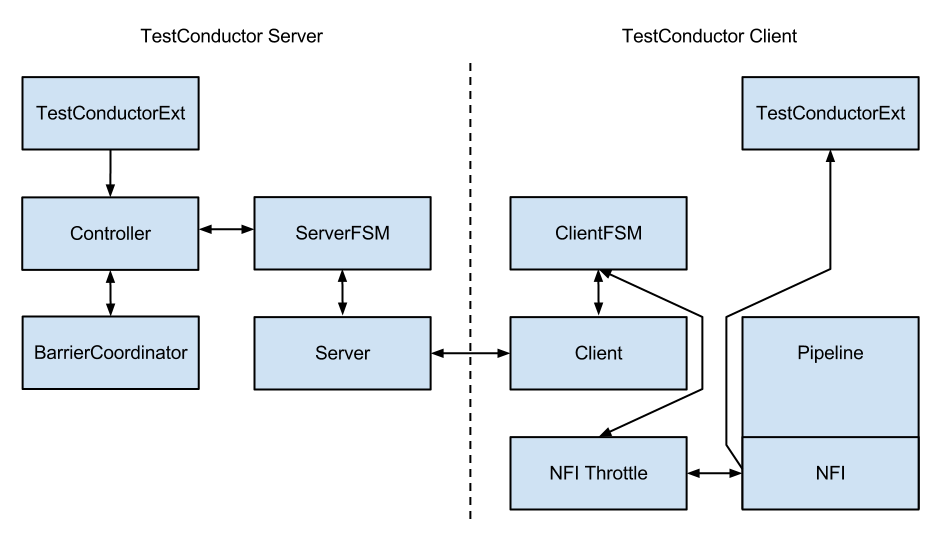

Multi Node Testing
Module info
To use Multi Node Testing, you must add the following dependency in your project:
- sbt
val PekkoVersion = "2.6.20+81-523134c3+20230202-1514-SNAPSHOT" libraryDependencies += "org.apache.pekko" %% "pekko-multi-node-testkit" % PekkoVersion % Test- Maven
<properties> <scala.binary.version>2.13</scala.binary.version> </properties> <dependencyManagement> <dependencies> <dependency> <groupId>org.apache.pekko</groupId> <artifactId>pekko-bom_${scala.binary.version}</artifactId> <version>2.6.20+81-523134c3+20230202-1514-SNAPSHOT</version> <type>pom</type> <scope>import</scope> </dependency> </dependencies> </dependencyManagement> <dependencies> <dependency> <groupId>org.apache.pekko</groupId> <artifactId>pekko-multi-node-testkit_${scala.binary.version}</artifactId> <scope>test</scope> </dependency> </dependencies>- Gradle
def versions = [ ScalaBinary: "2.13" ] dependencies { implementation platform("org.apache.pekko:pekko-bom_${versions.ScalaBinary}:2.6.20+81-523134c3+20230202-1514-SNAPSHOT") testImplementation "org.apache.pekko:pekko-multi-node-testkit_${versions.ScalaBinary}" }
| Project Info: Pekko Multi-node Testkit | |
|---|---|
| Artifact | org.apache.pekko
pekko-multi-node-testkit
2.6.20+81-523134c3+20230202-1514-SNAPSHOT
|
| JDK versions | Adopt OpenJDK 8 Adopt OpenJDK 11 |
| Scala versions | 2.13.8, 2.12.16, 3.1.2 |
| JPMS module name | pekko.remote.testkit |
| License | |
| Home page | https://pekko.apache.org/ |
| API documentation | |
| Forums | |
| Release notes | akka.io blog |
| Issues | Github issues |
| Sources | https://github.com/apache/incubator-pekko |
Multi Node Testing Concepts
When we talk about multi node testing in Pekko we mean the process of running coordinated tests on multiple actor systems in different JVMs. The multi node testing kit consist of three main parts.
- The Test Conductor. that coordinates and controls the nodes under test.
- The Multi Node Spec. that is a convenience wrapper for starting the
TestConductorTestConductorand letting all nodes connect to it. - The SbtMultiJvm Plugin. that starts tests in multiple JVMs possibly on multiple machines.
The Test Conductor
The basis for the multi node testing is the TestConductorTestConductor. It is a Pekko Extension that plugs in to the network stack and it is used to coordinate the nodes participating in the test and provides several features including:
- Node Address Lookup: Finding out the full path to another test node (No need to share configuration between test nodes)
- Node Barrier Coordination: Waiting for other nodes at named barriers.
- Network Failure Injection: Throttling traffic, dropping packets, unplugging and plugging nodes back in.
This is a schematic overview of the test conductor.

The test conductor server is responsible for coordinating barriers and sending commands to the test conductor clients that act upon them, e.g. throttling network traffic to/from another client. More information on the possible operations is available in the remote.testconductor.Conductorremote.testconductor.Conductor API documentation.
The Multi Node Spec
The Multi Node Spec consists of two parts. The MultiNodeConfigMultiNodeConfig that is responsible for common configuration and enumerating and naming the nodes under test. The MultiNodeSpec that contains a number of convenience functions for making the test nodes interact with each other. More information on the possible operations is available in the remote.testkit.MultiNodeSpecremote.testkit.MultiNodeSpec API documentation.
The setup of the MultiNodeSpec is configured through java system properties that you set on all JVMs that’s going to run a node under test. These can be set on the JVM command line with -Dproperty=value.
- These are the available properties
-
multinode.max-nodesThe maximum number of nodes that a test can have. -
multinode.hostThe host name or IP for this node. Must be resolvable using InetAddress.getByName. -
multinode.portThe port number for this node. Defaults to 0 which will use a random port. -
multinode.server-hostThe host name or IP for the server node. Must be resolvable using InetAddress.getByName. -
multinode.server-portThe port number for the server node. Defaults to 4711. -
multinode.indexThe index of this node in the sequence of roles defined for the test. The index 0 is special and that machine will be the server. All failure injection and throttling must be done from this node.
The SbtMultiJvm Plugin
The SbtMultiJvm Plugin has been updated to be able to run multi node tests, by automatically generating the relevant multinode.* properties. This means that you can run multi node tests on a single machine without any special configuration by running them as normal multi-jvm tests. These tests can then be run distributed over multiple machines without any changes by using the multi-node additions to the plugin.
Multi Node Specific Additions
The plugin also has a number of new multi-node-* sbt tasks and settings to support running tests on multiple machines. The necessary test classes and dependencies are packaged for distribution to other machines with SbtAssembly into a jar file with a name on the format <projectName>_<scalaVersion>-<projectVersion>-multi-jvm-assembly.jar
To be able to distribute and kick off the tests on multiple machines, it is assumed that both host and target systems are POSIX like systems with ssh and rsync available.
- These are the available sbt multi-node settings
-
multiNodeHostsA sequence of hosts to use for running the test, on the formuser@host:javawhere host is the only required part. Will override settings from file. -
multiNodeHostsFileNameA file to use for reading in the hosts to use for running the test. One per line on the same format as above. Defaults tomulti-node-test.hostsin the base project directory. -
multiNodeTargetDirNameA name for the directory on the target machine, where to copy the jar file. Defaults tomulti-node-testin the base directory of the ssh user used to rsync the jar file. -
multiNodeJavaNameThe name of the default Java executable on the target machines. Defaults tojava.
- Here are some examples of how you define hosts
-
localhostThe current user on localhost using the default java. -
user1@host1Useruser1on hosthost1with the default java. -
user2@host2:/usr/lib/jvm/java-7-openjdk-amd64/bin/javaUseruser2on hosthost2using java 7. -
host3:/usr/lib/jvm/java-6-openjdk-amd64/bin/javaThe current user on hosthost3using java 6.
Running the Multi Node Tests
To run all the multi node test in multi-node mode (i.e. distributing the jar files and kicking off the tests remotely) from inside sbt, use the multiNodeTest task:
multiNodeTest
To run all of them in multi-jvm mode (i.e. all JVMs on the local machine) do:
multi-jvm:test
To run individual tests use the multiNodeTestOnly task:
multiNodeTestOnly your.MultiNodeTest
To run individual tests in the multi-jvm mode do:
multi-jvm:testOnly your.MultiNodeTest
More than one test name can be listed to run multiple specific tests. Tab completion in sbt makes it easy to complete the test names.
A Multi Node Testing Example
First we need some scaffolding to hook up the MultiNodeSpecMultiNodeSpec with your favorite test framework. Lets define a trait STMultiNodeSpec that uses ScalaTest to start and stop MultiNodeSpec.
sourcepackage org.apache.pekko.remote.testkit
import scala.language.implicitConversions
import org.scalatest.BeforeAndAfterAll
import org.scalatest.matchers.should.Matchers
import org.scalatest.wordspec.AnyWordSpecLike
/**
* Hooks up MultiNodeSpec with ScalaTest
*/
trait STMultiNodeSpec extends MultiNodeSpecCallbacks with AnyWordSpecLike with Matchers with BeforeAndAfterAll {
self: MultiNodeSpec =>
override def beforeAll() = multiNodeSpecBeforeAll()
override def afterAll() = multiNodeSpecAfterAll()
// Might not be needed anymore if we find a nice way to tag all logging from a node
override implicit def convertToWordSpecStringWrapper(s: String): WordSpecStringWrapper =
new WordSpecStringWrapper(s"$s (on node '${self.myself.name}', $getClass)")
}
Then we need to define a configuration. Lets use two nodes "node1 and "node2" and call it MultiNodeSampleConfig.
sourcepackage org.apache.pekko.remote.sample
import org.apache.pekko.remote.testkit.{ MultiNodeConfig, STMultiNodeSpec }
object MultiNodeSampleConfig extends MultiNodeConfig {
val node1 = role("node1")
val node2 = role("node2")
}
And then finally to the node test code. That starts the two nodes, and demonstrates a barrier, and a remote actor message send/receive.
sourcepackage org.apache.pekko.remote.sample
import org.apache.pekko
import pekko.actor.{ Actor, Props }
import pekko.remote.testkit.MultiNodeSpec
import pekko.testkit.ImplicitSender
class MultiNodeSampleSpecMultiJvmNode1 extends MultiNodeSample
class MultiNodeSampleSpecMultiJvmNode2 extends MultiNodeSample
object MultiNodeSample {
class Ponger extends Actor {
def receive = {
case "ping" => sender() ! "pong"
}
}
}
class MultiNodeSample extends MultiNodeSpec(MultiNodeSampleConfig) with STMultiNodeSpec with ImplicitSender {
import MultiNodeSample._
import MultiNodeSampleConfig._
def initialParticipants = roles.size
"A MultiNodeSample" must {
"wait for all nodes to enter a barrier" in {
enterBarrier("startup")
}
"send to and receive from a remote node" in {
runOn(node1) {
enterBarrier("deployed")
val ponger = system.actorSelection(node(node2) / "user" / "ponger")
ponger ! "ping"
import scala.concurrent.duration._
expectMsg(10.seconds, "pong")
}
runOn(node2) {
system.actorOf(Props[Ponger](), "ponger")
enterBarrier("deployed")
}
enterBarrier("finished")
}
}
}
Things to Keep in Mind
There are a couple of things to keep in mind when writing multi node tests or else your tests might behave in surprising ways.
- Don’t issue a shutdown of the first node. The first node is the controller and if it shuts down your test will break.
- To be able to use
blackhole,passThrough, andthrottleyou must activate the failure injector and throttler transport adapters by specifyingtestTransport(on = true)testTransport(true)in yourMultiNodeConfig. - Throttling, shutdown and other failure injections can only be done from the first node, which again is the controller.
- Don’t ask for the address of a node using
node(address)after the node has been shut down. Grab the address before shutting down the node. - Don’t use MultiNodeSpec methods like address lookup, barrier entry et.c. from other threads than the main test thread. This also means that you shouldn’t use them from inside an actor, a future, or a scheduled task.
Configuration
There are several configuration properties for the Multi-Node Testing module, please refer to the reference configuration.